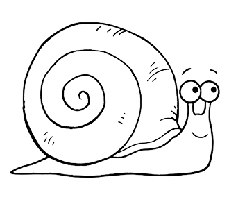
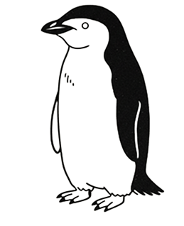
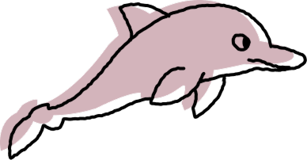

SNAIL
달팽이

Sternula Albifrons
쇠제비갈매기
다른 한쪽은 휴식. 눈도 반쪽만 감음.
Dolphin
돌고래
턱끈펭귄

CHINSTRAP
penguin
- 짧게 여러 번(3~5초) 눈을 붙임. 평균 4초 동안 잠을 자고 깨어나 주변을 살피는 것을 반복.
- 하루에 1만 번 이상 반복하여 총 11시간 이상의 수면 시간을 확보함.
- 추위와 포식자 때문에 이러한 수면 패턴으로 발달.
군함새
Lesser Frigatebird
- (비행 중)육지에서는 1분씩 짧게 잠들었다 깨기를 반복하여 총 12시간을 잠.
- 비행 중에는 하루 45분만 잠을 자며, 주로 해가 진 후에 10초씩 아주 짧게 수면을 취함.
Amazon
Pink Dolphin
Pink Dolphin
아마존 핑크 돌고래

- 탁한 물이 흐르는 지역에 살기에 시력보다 초음파에 의존하여 잠을 잠.
- 반구수면 (한쪽 뇌만 잠들고 다른 쪽은 깨어있음)을 유지.